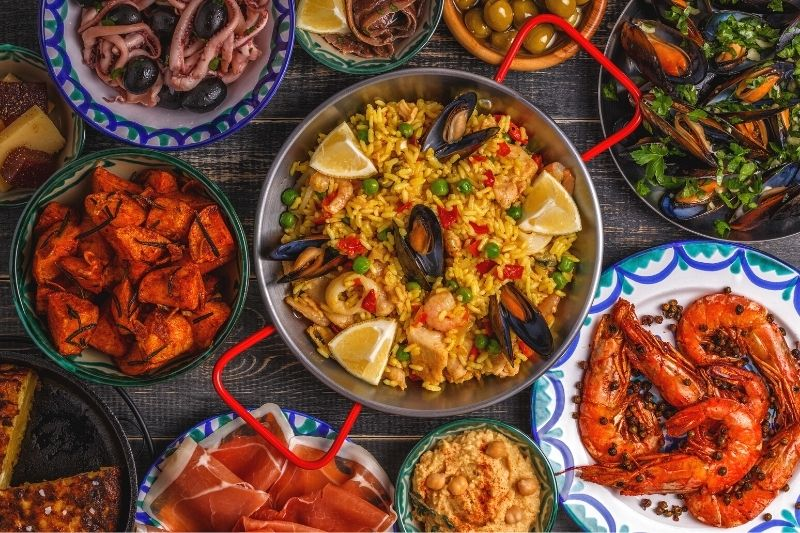
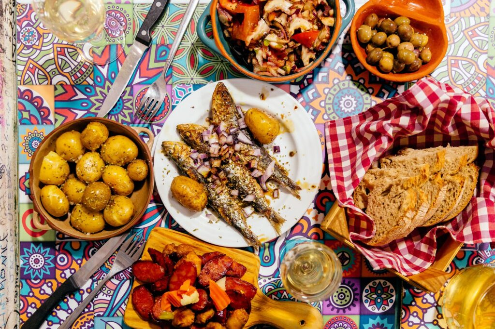

French Cuisine

Key Features: Elegant, technique-driven cuisine focused on sauces, precision, and refined presentation.
Common Ingredients: Butter, cream, wine, herbs (thyme, tarragon), cheese, baguette.
Popular Dishes: Coq au Vin, Ratatouille, Baguette, Crème Brûlée, Croissants.
Regional Styles: Provençal (herbs/olive oil), Normand (cream/butter), Alsatian (German-influenced), Parisian haute cuisine.
Spanish Cuisine
Key Features: Bold, rustic flavors with heavy use of olive oil, spices, and shared tapas culture.
Common Ingredients: Olive oil, paprika, garlic, seafood, saffron, jamón.
Popular Dishes: Paella, Tortilla Española, Tapas, Gazpacho, Churros.
Regional Styles: Andalusian (fried foods), Catalan (seafood & sauces), Basque (grills), Castilian (roasts).
Italian Cuisine

Key Features: Simple, fresh, ingredient-focused cooking with strong regional diversity.
Common Ingredients: Olive oil, tomatoes, basil, garlic, pasta, cheese (Parmesan, mozzarella).
Popular Dishes: Pizza, Pasta (Carbonara, Lasagna), Risotto, Gelato, Tiramisu.
Regional Styles: Northern (butter/risotto), Central (pasta/wine), Southern (tomatoes/seafood), Sicilian (Arabic influence).
Portuguese Cuisine
Key Features: Simple, hearty, seafood-centric cooking with strong seasoning balance.
Common Ingredients: Cod (bacalhau), olive oil, garlic, chilies, citrus, seafood.
Popular Dishes: Bacalhau à Brás, Pastéis de Nata, Piri-Piri Chicken, Caldo Verde.
Regional Styles: Coastal (seafood), Northern (meat stews), Central (grilled dishes), Azores/Madeira (tropical influences).